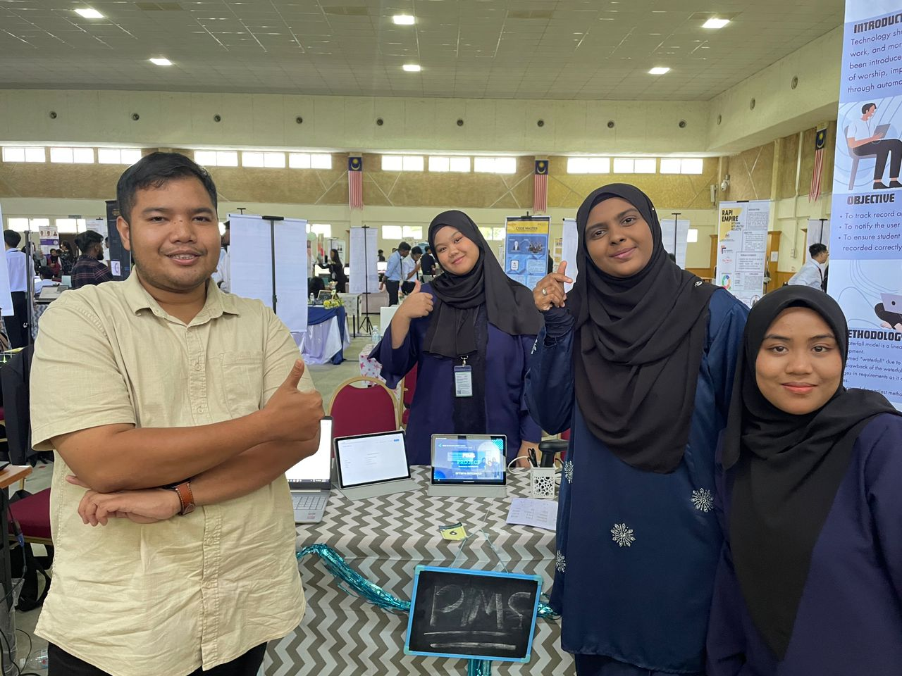
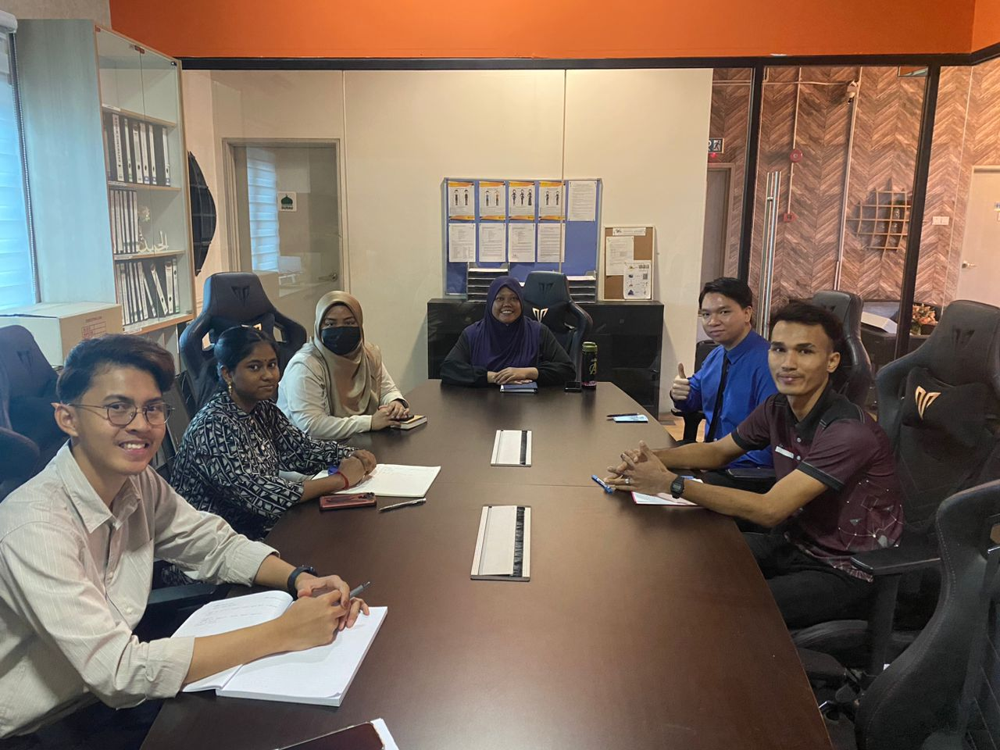
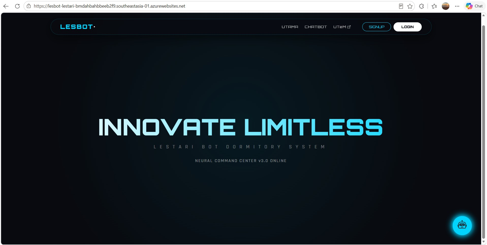
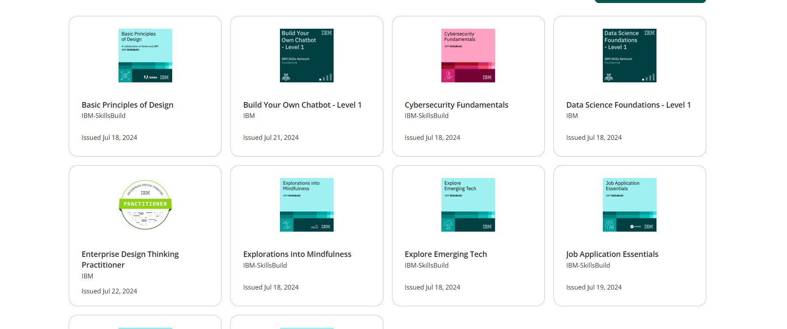

Background Studies
.JPG)
Objective
Establishing IT foundations at SMK Seskyen 24(2) and Polytechnic Balik Pulau.
Hurdles
Transitioning into technical Digital Technology required rapid adaptation to logic-based thinking.
Diploma FYP: Local RDBMS

Hurdles
Manually architecting a PHP/MySQL system to handle redundant data without cloud tools.
Takeaway
Diploma Internship

Hurdles
Cleaning legacy "messy" data into a structured format without disrupting daily business operations.
Workshop 1: Individual Core

Objective
The UTeM Survival Test: Proving individual technical competence by building a full SDLC module.
Workshop 2: Group Simulation

Hard Work
Operating as a "Software House." I acted as the DB Lead, using Git to synchronize queries across the team.
Degree FYP: LESBOT (Cloud)

Key Decisions
Implementing Administrative Audit Trails on Azure SQL to ensure data accountability.
Verify Azure ProjectCredentials & LinkedIn

Validating expertise through industry leaders like IBM and Credly. Continuous learning is my core database strategy.
Visit LinkedIn for Full Details